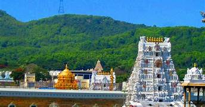
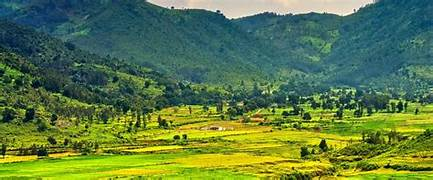
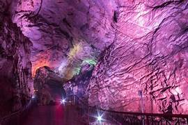
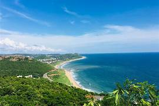
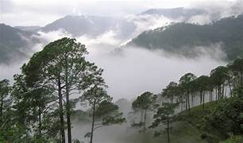
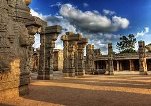
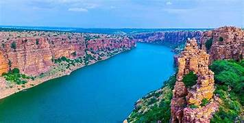
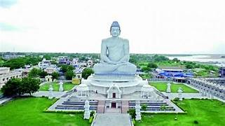
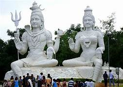
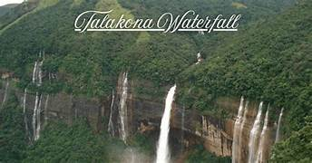

Name: Ravi Kumar
Phone: +91 9123456789
Email: raviguide@gmail.com
Home to the famous Tirumala Venkateswara Temple, one of the richest temples in the world.
Millions of devotees visit every year to seek blessings of Lord Venkateswara.
By Air: Tirupati Airport (15 km)
By Train: Tirupati Railway Station
View on Google Maps
Beautiful hill station located in the Eastern Ghats.
Known for coffee plantations, waterfalls and tribal culture.
By Air: Visakhapatnam Airport
By Train: Araku Railway Station
View on Google Maps
Discovered in 1807, these limestone caves are among the largest caves in India.
Known for stunning stalactite and stalagmite rock formations.
By Air: Visakhapatnam Airport
By Train: Borra Guhalu Station
View on Google Maps
Major coastal city and tourist destination of Andhra Pradesh.
Known for RK Beach, submarine museum and scenic coastline.
By Air: Visakhapatnam Airport
By Train: Vizag Railway Station
View on Google Maps
A small village in Eastern Ghats known as the Kashmir of Andhra Pradesh.
Known for cold climate and misty hills.
By Air: Visakhapatnam Airport
By Train: Narsipatnam Road
View on Google Maps
Built in the 16th century during the Vijayanagara Empire.
Famous for the hanging pillar and giant Nandi statue.
By Air: Bengaluru Airport
By Train: Hindupur Station
View on Google Maps
Historic fort town known for its deep gorge carved by the Penna River.
Called the Grand Canyon of India.
By Air: Kadapa Airport
By Train: Jammalamadugu Station
View on Google Maps
Ancient Buddhist site known for the Amaravati Stupa.
Important archaeological and spiritual destination.
By Air: Vijayawada Airport
By Train: Vijayawada Station
View on Google Maps
A hilltop park developed by Visakhapatnam city authorities.
Large statues of Lord Shiva and Parvati and panoramic sea view.
By Air: Visakhapatnam Airport
By Train: Vizag Railway Station
View on Google Maps
Located in Sri Venkateswara National Park.
Tallest waterfall in Andhra Pradesh (270 ft).
By Air: Tirupati Airport
By Train: Tirupati Station
View on Google Maps